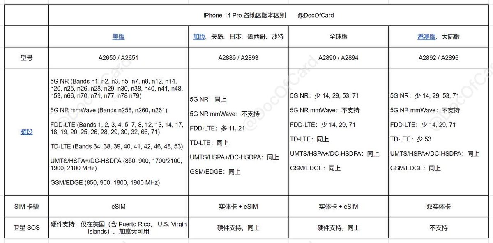

☆猫猫国国王桜夏一世☆
@sakura2333owo
@NankyuSeiichi 我才发现我输入法打错了 我要打的是港澳 输入法自动带个台 果咩！让你误会了！谢谢你的科普！！！（ T ^ T ）

南宫清一
@NankyuSeiichi
@sakura2333owo 并不存在“港澳台版”，中国和港澳是一个配置（中国版），台湾是一个配置（国际版），美国是一个配置（美国版）。14pm美行没卡槽不推荐，中国和国际版的区别主要是前者是双sim后者是单sim+esim，以及国行允许关闭特定软件的流量功能，其余还有一些小的区别你可以看图 https://t.co/NuVKTpfmIk